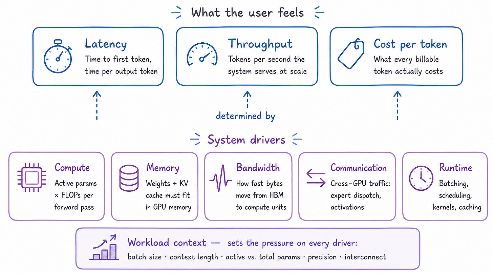
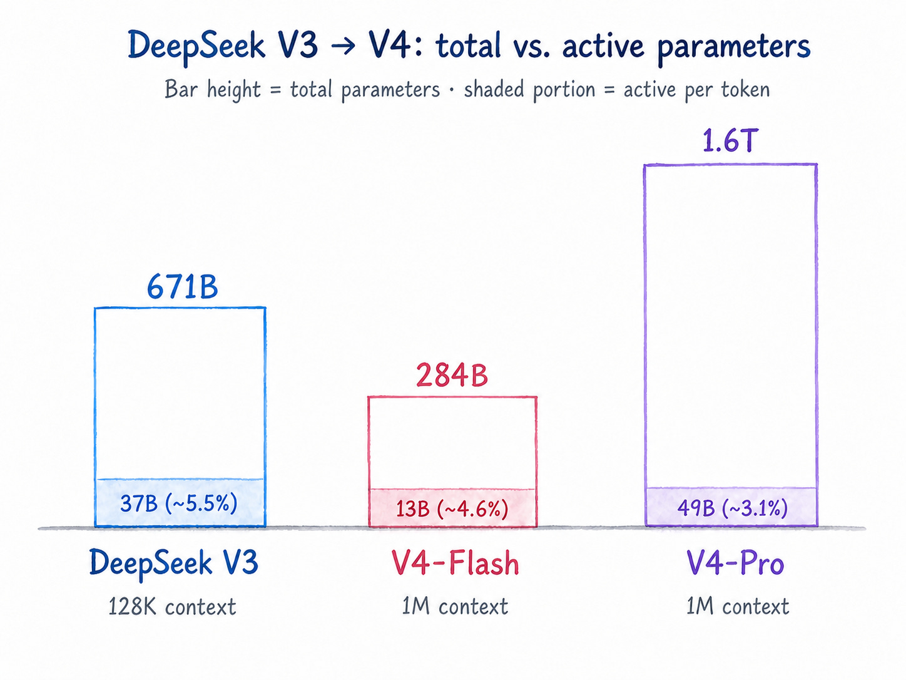
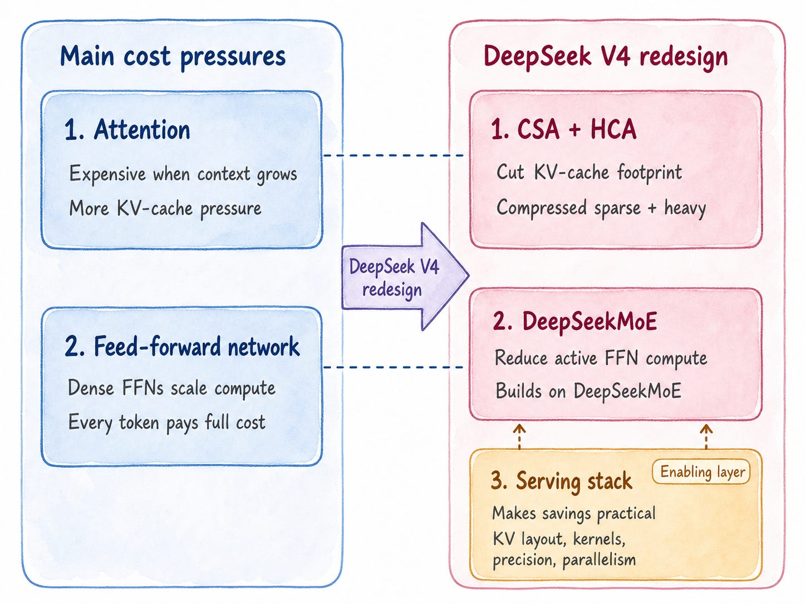
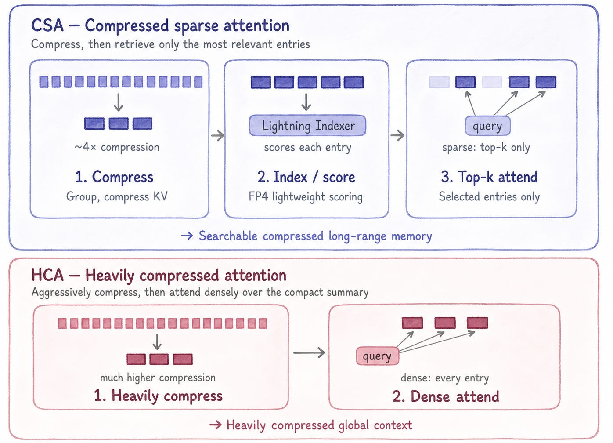
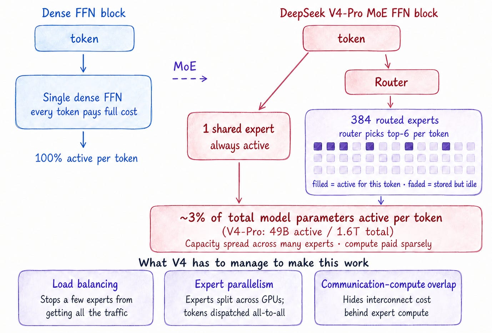
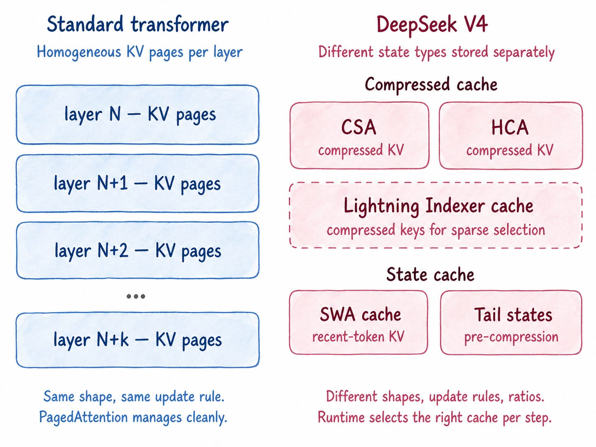
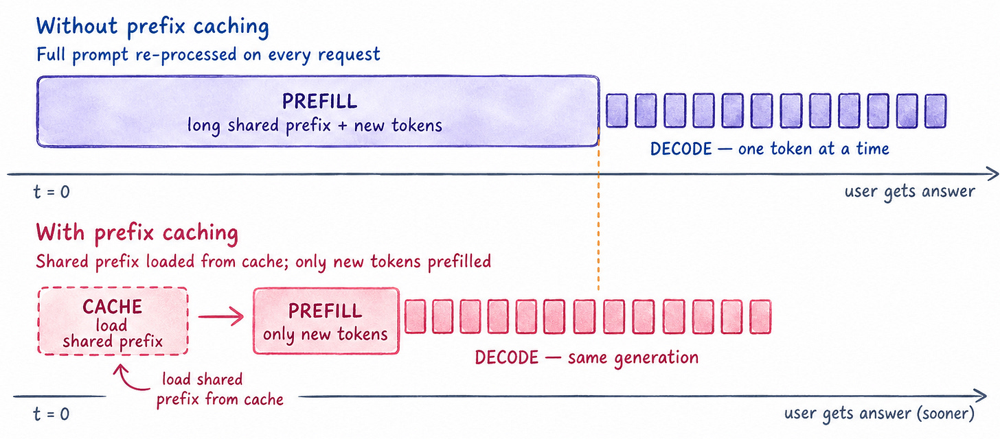

May 3, 2026
Understanding Inference Economics with DeepSeek V4
Why million-token intelligence is really a memory, bandwidth, and serving problem.
May 3, 2026
Why million-token intelligence is really a memory, bandwidth, and serving problem.
Intelligence is not free to use.
A single agent run — read a codebase, call tools, inspect errors, generate patches, run tests, revise the plan — can burn through hundreds of thousands of tokens before it returns an answer. At frontier scale, that cost is becoming one of the central constraints shaping the AI industry. It shows up in usage-based billing, rate limits, premium tiers, and restrictions on long-running agentic workflows — all signs that AI products are moving from subsidized experimentation toward explicit token economics. ( “You’re out of extra usage ∙ Your limit resets at 12:10 PM“ — rings a bell?)
At the infrastructure level, compute itself is becoming a strategic bottleneck. AI labs are competing not only on model quality but on access to GPUs, memory, data centers, power, and long-term capacity. In a compute-constrained world, inference efficiency stops being a back-office optimization and becomes a strategic advantage.
This is why DeepSeek V4 is worth studying carefully — not as a frontier-capability release (it isn't trying to top GPT-5.x or Claude Opus 4.x on raw capability on raw capability), but as one of the clearest recent examples of an efficiency-frontier release. It gives us a concrete way to examine inference economics: what it costs to generate a useful token, and how architectural choices can reduce, shift, or expose that cost.

What does a useful token actually cost? Several costs are paid at once:
Compute cost — the matrix multiplications needed to run the active parts of the model
Memory cost — model weights and KV cache must fit somewhere
Memory-bandwidth cost — during decoding, the system repeatedly reads weights and KV cache
Communication cost — in distributed models, tokens and activations move across GPUs
Runtime overhead — batching, scheduling, kernels, prefix caching, and parallelism determine how efficiently expensive hardware is actually used
The outcomes users feel directly — latency, throughput, cost per token — sit on top of these deeper system drivers, along with batch size, hardware utilization, interconnect, and context length through the KV cache.
DeepSeek V4 is interesting because many of its design choices map directly onto this cost structure. The architecture is not only trying to improve capability; it is trying to make long-context inference practical to serve.
The paper introduces two main variants: DeepSeek V4-Pro, with 1.6T total parameters and 49B activated per token, and DeepSeek V4-Flash, with 284B total parameters and 13B activated. Both support a one-million-token context window. Set against V3, the trajectory is clear:

Total parameters shape how much capacity must be stored. Activated parameters shape how much compute each token actually pays for. V4-Pro is roughly 3% active — meaning a token only ever pays for a small slice of a very large model. And a one-million-token context window means KV cache, memory bandwidth, and long-context serving efficiency become central to whether the model is usable in production.

For long-context models, attention is one of the first places where inference becomes expensive.
During inference, the model stores key/value activations from previous tokens in the KV cache, and each new token uses this cache to attend to historical context. For short prompts, this is manageable. But when context grows to hundreds of thousands — or a million — tokens, the model has much more history to store, read, and search through. Two related costs grow together: more attention work, and more KV-cache memory and bandwidth pressure.
This is where memory time starts to matter. The model is not only doing computation; it is repeatedly moving data — especially KV-cache data — during generation.
DeepSeek V4 addresses this with a hybrid attention design built around two top-level mechanisms: Compressed Sparse Attention (CSA) and Heavily Compressed Attention (HCA) (you may also see CSA’s sparse-selection step referred to as DeepSeek Sparse Attention, or DSA. In V4, DSA is the per-query top-k selection over compressed KV entries inside CSA). They reduce the cost of long-context memory in different ways.
CSA compresses the long past into fewer KV entries, then has each query attend only to a selected top-k of those entries rather than all of them. The selection is done by a separate lightweight scoring module — the Lightning Indexer — which assigns relevance scores to compressed entries. Because the indexer is much cheaper than full attention, the selection step itself doesn’t undo the savings. The model ends up with fewer KV entries to store and read, and avoids spending attention over large parts of history that are irrelevant to the current token.
HCA pushes compression further. Instead of sparse retrieval over moderately compressed entries, HCA performs dense attention over a much shorter, heavily compressed representation of the past. The result is a compact global view of the context — lower resolution, but cheap to attend over.

The economic effect is smaller effective KV memory, less attention over irrelevant history, and lower memory-bandwidth pressure during decoding — adding up to materially cheaper long-context inference.
There is one important caveat: this architectural saving creates serving complexity. CSA and HCA produce compressed KV states with different shapes, compression ratios, and update rules, which means the runtime needs a more careful KV-cache layout for the theoretical savings to become real. We’ll come back to this in the serving section.
In a standard transformer, every token passes through the same dense feed-forward network (FFN). As the model grows, every token pays for more matrix multiplication. Capacity and per-token compute are tightly coupled.
MoE breaks that coupling. Instead of one dense FFN, the FFN is split into many smaller expert networks, and a router decides which experts each token should use. This creates a crucial distinction:
Total parameters describe everything the model stores — full capacity and memory footprint
Active parameters describe the subset used for one token — the compute that token actually pays for
This is why MoE matters for inference economics: it lets the model scale stored capacity without forcing every token to pay for the full model.

DeepSeek V4 leans into sparse activation hard. V4-Pro has 1.6T total parameters but only 49B activated per token — about 3.1% of the total parameter pool on a per-token forward path. In V4-Pro, each MoE layer has one shared expert and 384 routed experts, with only 6 routed experts activated per token. V4-Flash uses the same shared-plus-routed MoE pattern at smaller scale: 284B total parameters, 13B activated per token, and 1 shared expert plus 256 routed experts per MoE layer, again with 6 routed experts activated per token. The shared expert gives every token a common processing path; the routed experts provide specialized capacity.
The intuition is clean: a large expert pool means more stored capacity, and few active experts per token means lower compute per token.
But MoE is not free efficiency.
The full expert pool still has to be stored somewhere. The router has to decide which experts each token should use. Expert usage has to be balanced so that some experts don’t become overloaded while others sit idle. And when experts are distributed across GPUs, tokens have to be dispatched to the devices that hold their selected experts, which creates communication overhead. In expert-parallel serving, tokens may need to move across GPUs in an all-to-all pattern, and if that communication is slow, it can eat directly into the compute savings from sparse activation.
So the MoE tradeoff is: less active compute, but more pressure on storage, routing, balancing, and interconnect. DeepSeek V4’s MoE design addresses this with load-balancing mechanisms and fine-grained expert-parallel kernels that overlap communication with computation.
Architecture alone does not guarantee cheaper inference. The savings only matter if the serving system can realize them on actual hardware. This is where KV-cache layout, memory bandwidth, precision, prefix caching, kernels, parallelism, and interconnect enter the story.

In a standard transformer, the KV cache is relatively uniform — each layer stores key/value states for previous tokens in a regular structure that runtimes like vLLM can manage with PagedAttention.
DeepSeek V4’s hybrid attention complicates this. CSA and HCA produce different kinds of states: compressed long-range KV entries, recent raw states, sparse-retrieval indexer states, and uncompressed tail tokens waiting to be compressed. These states have different shapes, compression ratios, and update rules, so V4 needs a heterogeneous KV-cache layout rather than a one-size-fits-all cache. The compressed cache holds long-range CSA/HCA memory; a separate state cache holds recent raw tokens and not-yet-compressed tail states.
This matters because reducing KV cache is not enough. The runtime also has to retrieve the right kind of memory efficiently during decoding — and bandwidth, not capacity, is often the binding constraint. A model fitting in GPU memory means it can run; it doesn’t mean it can run fast. During decoding, the model repeatedly reads weights, KV cache, expert weights, routing metadata, and attention states. If too much data has to move from memory to compute units, the system becomes memory-bandwidth-bound: the GPU has FLOPs to spare and spends its time waiting for data.
DeepSeek V4 uses mixed low-precision formats — FP4 and FP8 — as part of the serving story. Lower precision reduces both memory footprint and memory-bandwidth pressure, which is especially important for MoE models, where expert weights make up a large share of total parameters. FP4 and FP8 are not just storage tricks; they reduce the number of bytes that have to be stored and moved during inference.
The caveat: low precision only helps if the model maintains quality and the hardware and kernels can execute those formats efficiently.

Long-context serving has two phases. Prefill processes the input prompt and creates KV cache. Decode generates output tokens one by one. Prefill can be expensive when the prompt is long — but many real workloads reuse the same prefix: the same system prompt, tool schema, repository context, policy document, instruction block, or few-shot examples.
If the system can reuse previously computed KV states for that shared prefix, it avoids recomputing the same long prompt over and over. This is especially useful for agentic and enterprise workloads. A coding agent may repeatedly work with the same repository context. A policy assistant may repeatedly use the same long document. A research assistant may repeatedly use the same paper or transcript.
A clean way to state the serving intuition: batching amortizes weight reads; prefix caching amortizes repeated prompt processing.
But prefix caching is not free either. Loading cached KV states can add I/O latency, especially if they’re stored outside GPU memory. It only helps when the saved prefill computation is larger than the cost of retrieving the cached state.
Finally, the runtime needs efficient kernels and parallelism strategies. If CSA and HCA reduce theoretical attention cost, the kernels have to implement compressed and sparse attention efficiently. If MoE reduces active compute, the system still has to route tokens across experts efficiently. If FP4 reduces bandwidth pressure, the hardware and kernels have to actually support useful low-precision execution.
DeepSeek V4’s architecture reduces the theoretical cost of inference; the serving stack is what turns those reductions into real latency, throughput, and cost.
DeepSeek V4 is interesting not simply because it supports a one-million-token context window. The deeper lesson is that long-context intelligence has to be made economically usable.
A model that can technically accept a million tokens isn’t enough. It also has to process that context with reasonable latency, memory cost, bandwidth pressure, and serving cost. That’s where V4 becomes interesting — it attacks the cost of long-context inference from multiple directions at once.
This matters even more in the age of agents — where a single task isn’t one call, it’s dozens, each adding tokens, history, and cost. Which is where inference economics and test-time scaling meet. Test-time scaling is about spending more inference-time compute to get better answers — more reasoning steps, more samples, more verification, more tool use, more agent loops. Inference economics is about the cost of doing all of that.
For builders, researchers, and technical leads, the takeaway is straightforward: don’t evaluate models only by benchmark scores. Look at the cost structure behind the capability. The next time a frontier model lands, ask:
What’s the active parameter count, not just the total?
What’s the KV cache footprint per token at the advertised context length?
What’s the memory bandwidth requirement during decode?
What kind of interconnect does the recommended serving setup assume?
Does the architecture require special serving infrastructure for the savings to be real?
As models become more agentic, the cost of using intelligence repeatedly may matter as much as the intelligence itself. The models that win will be the ones that are cheap to serve, not just smart on benchmarks.